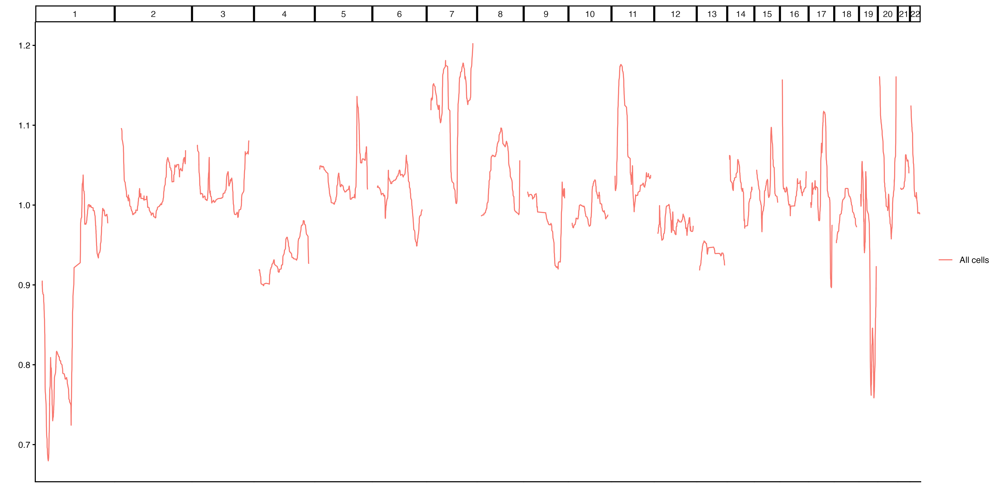
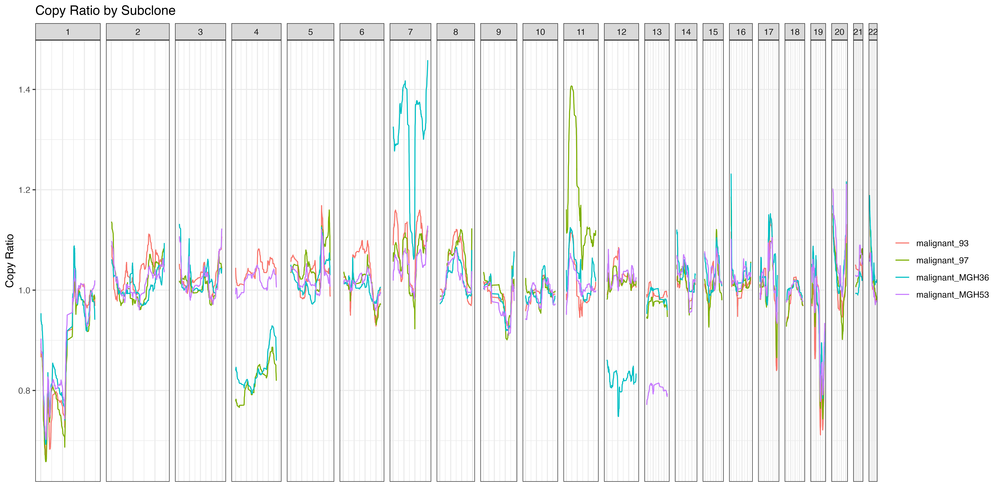
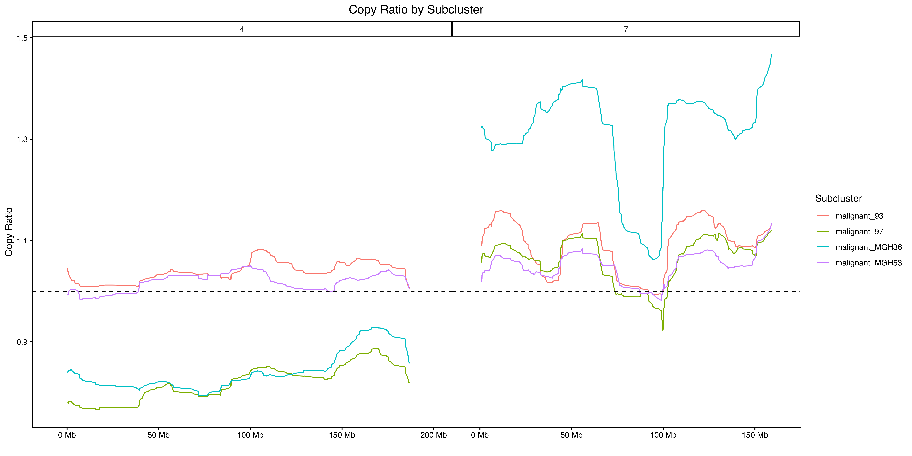
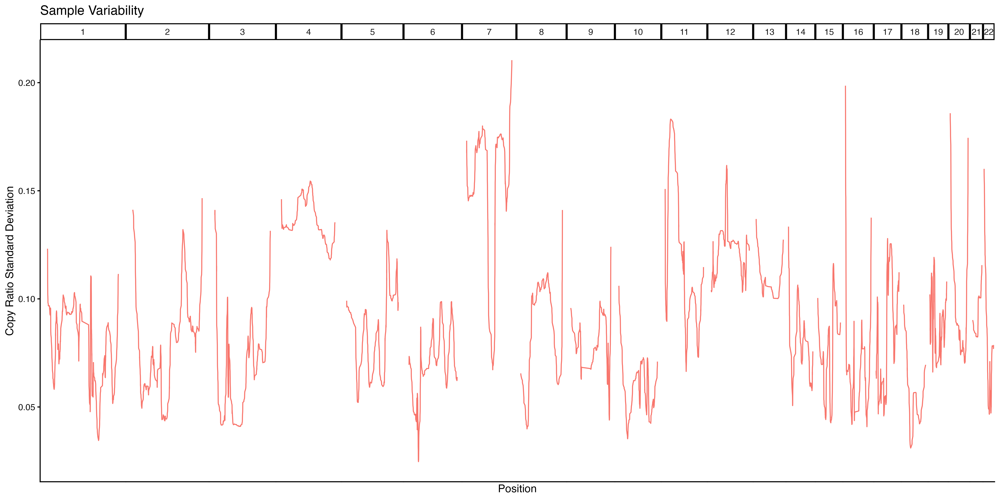

a4_LineplotExample.RmdAlthough heatmaps are one of the most common ways to visualize single-cell copy number results, the combination of large genomes, small genomic bins and drastic genomic alterations can make it difficult to observe subtle differences.
A simple line plot can be an easy to way to quickly visualize different regions of the genome and visualize the differences in specific regions. scCNVis provides a simple line plot method that returns a ggplot2 object, which can be easily customized to fit the user’s exact needs. We begin with the example data provided:
library(scCNVis)
obj <- scCNVis::createPlotObject(example.matrix,
example.cells,
example.granges,
example.meta)
lineplot.result <- scCNVis::makeLinePlot(obj)
print(names(lineplot.result))
#> [1] "Plot" "PlotData"
Example 1a. Lineplot
The output from makeLinePlot is an object with two
items. Plot is a ggplot2 plot that can be further
customized as desired. PlotData is the data used to create
the plot, in case the user wants to create their own visualization.
The outputs of the line plot function can be saved using the provided
helper function, or using any other method commonly used to save ggplot
outputs, such as ggplot2::ggsave(lineplot.result$Plot).
Lineplots may be grouped by any column in the scCNVis object’s
metadata. The function also provides various other ways to customize the
plot. Below is an example of how this can be done using the
Subclone column available in our example data, and how the
output object can be further customized to the user’s preferences:
group.colors <- c("Blue","Red","Yellow","Green") #We have 4 subclones
names(group.colors) <- unique(obj@Meta$Subclone)
lineplot.result <- scCNVis::makeLinePlot(obj,
group = "Subclone",
group.colors = group.colors
)
final.plot <- lineplot.result$Plot +
ggplot2::labs(y="Copy Ratio",
title="Copy Ratio by Subclone") +
ggplot2::theme_bw() +
ggplot2::theme(axis.text.x = ggplot2::element_blank(),
axis.ticks.x = ggplot2::element_blank())
#Save using ggsave, because the final plot is not the one
#in heatmap.results
#ggplot2::ggsave("~/path/to/lineplot.png", final.plot)
Example 1b. Lineplot grouped by sample
Of course, other metadata can be used as well. Here, we perform the same clustering used in the Heatmap example and plot the resulting clusters. Because our earlier line plot shows great variability on chrX, we could choose to limit our plot to that chromosome. Again, we may choose to add additional customizations to the output plot.
#Using the example.granges object that the scCNVis object was created from
plot.regions <- example.granges[example.granges@seqnames == "chr4" | example.granges@seqnames == "chr7",]
lineplot.result <- scCNVis::makeLinePlot(obj,
gr = plot.regions,
group = "Subclone",
ylab = "Copy Ratio",
show.x.ticks = TRUE
)
final.plot <- lineplot.result$Plot +
ggplot2::geom_hline(yintercept = 1, linetype="dashed", color="black") +
ggplot2::labs(title="Copy Ratio by Subcluster",
color="Subcluster") +
ggplot2::theme(plot.title = ggplot2::element_text(hjust = 0.5))
#Rather than use ggsave, here I opt to add the updated
#plot to the lineplot.result object and then use the wrapper function
#lineplot.result$Plot <- final.plot
#scCNVis::saveCustomPlot(lineplot.result, "~/path/to/lineplot.png")
Example 1c. Lineplot with subclusters
Finally, makeLinePlot supports alternative metrics that
may provide new insights using the method parameter. By
default, method = mean and the line plot shows the average
value in each genomic bin for each group. Using
method = median provides a similar approach. However,
method = range reports the range (max - minimum) for a
group, showing the heterogeneity within the group and
method = sd measures the standard deviation. In this case,
the height of the line on the y-axis is measuring how much variability
exists in that region. Since our previous plot showed large differences
between subclones on chr4 and chr7, we might expect those regions to be
some of the highest points on this plot.
lineplot.result <- scCNVis::makeLinePlot(obj,
method = "sd")
#Customize as desired
final.plot <- lineplot.result$Plot +
ggplot2::labs(x="Position",
y="Copy Ratio Standard Deviation",
title="Sample Variability") +
ggplot2::theme(legend.position="none")
Example 1d. Lineplot ranges
As expected, we see relatively high standard deviation scores on chr4 and chr7, suggesting that this sample has CN heterogeneity in those regions.